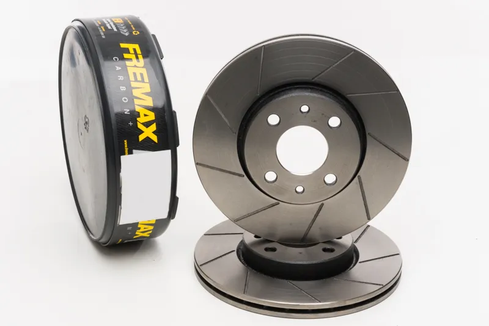
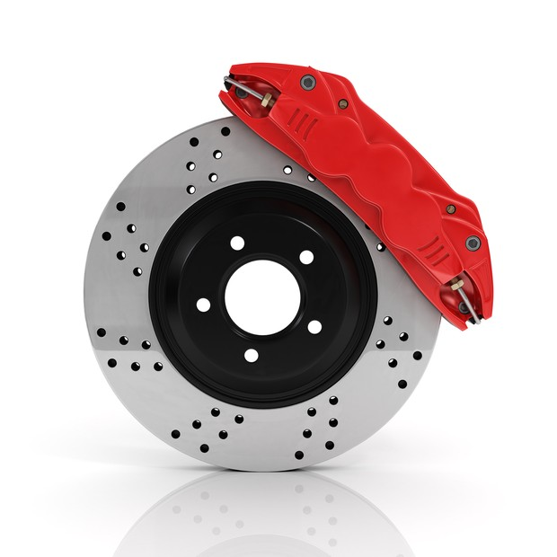
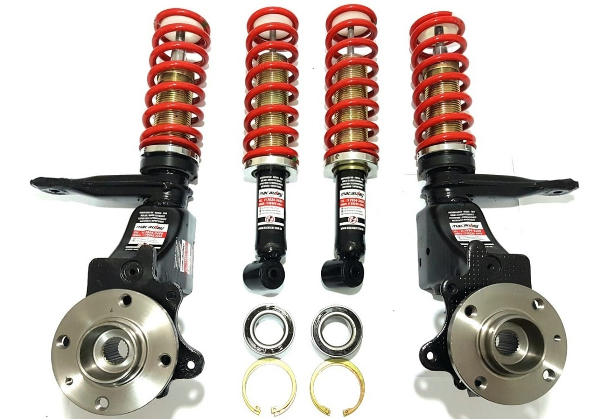
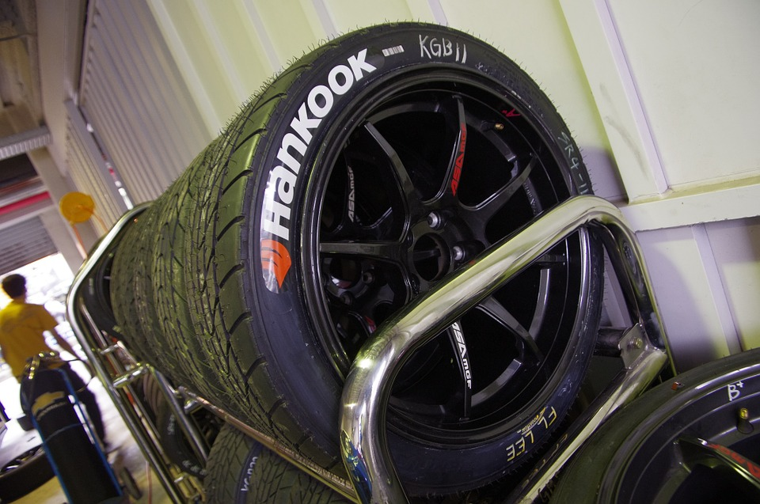

Quando se prepara um carro, toda a dinâmica dele muda e isso pode comprometer drasticamente a segurança do veículo.
veja na tabela alguns itens que podem ajudar na segurança:
| Item | Tipo |
|---|---|
| Freio | Frisado ou Perfurado |
| Suspensão | Baixa, de qualida e não com mola cortada |
| Rodas/Pneus | Rodas com um aro maior e Pneus com mais grip |
As pessoas confundem ou não sabem diferenciar os freios então irei mostrar a diferença
Frisado
Perfurado
A Suspensão é o que liga as rodas do carro à carroceria, a suspensão absorve alguns impactos que o veículo tem com o solo, quantos mais rígida a suspensão, menos torção se tem no veículo
Rodas maiores ajudam na estabilidade do veículo e pneus com mais grip não só ajudam na frenagem do veículo também ajuda na tração
